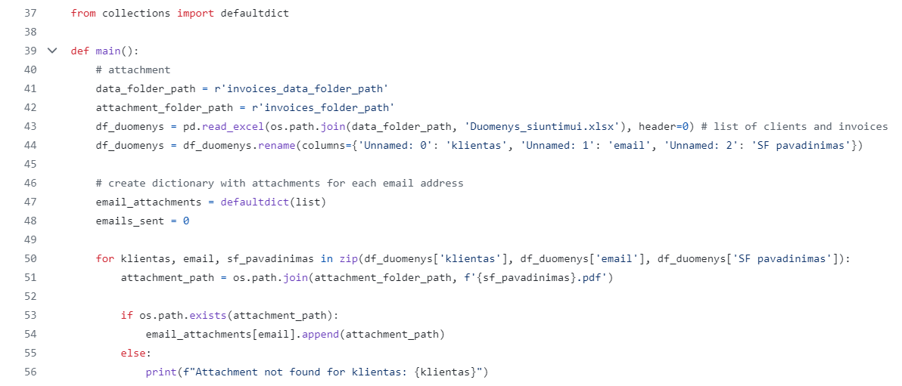

Overview
This project involves the automation of invoice processing and email sending, using Python to streamline and enhance efficiency. This solution minimizes manual work and optimizes the entire process of handling and sending invoices.
Initially, a consolidated PDF file containing all invoices is split into individual PDF files. Each newly created PDF file is named according to its corresponding invoice number. This allows for more efficient management of individual invoices and prepares them for further processing.

2. Data Integration with API and Excel
Using APIs, invoice data is imported into the Python environment. This data is then combined with additional information from an Excel file containing email addresses associated with names. The retrieved invoice data is processed by retaining necessary columns and merging them (based on invoice numbers). A new file is generated containing data such as client information, email addresses, and invoice numbers. This integrated file is used for further data processing.
Invoices are automatically grouped by email addresses to avoid situations where multiple separate emails are sent to the same address. This optimization helps streamline the sending process and reduces the number of emails clients receive.

4. Automated Invoice Sending
Using a Gmail account and authentication with an application-specific password, the Python program connects to the email server. Data required for sending invoices is retrieved from the previously processed Excel file. Corresponding invoices are automatically sent to each client as attachments in email messages. The program tracks the number of successfully sent invoices and identifies clients for whom invoices could not be sent. This helps efficiently manage the sending process and quickly address any issues.
This solution significantly reduces the manual effort involved in invoice preparation and sending. The automated process not only saves time but also ensures greater accuracy and efficiency in invoice handling. Integration via API to merge data from accounting software with information stored in Excel files facilitates efficient data processing and management.